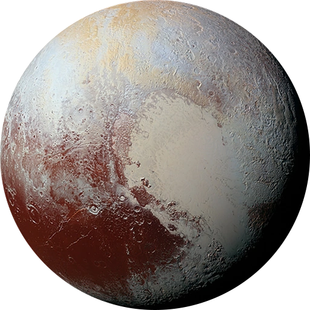

x
Pluto(dwarf)
| Diameter: | 2376.6 km |
|---|---|
| Radius: | 1,188.3 km |
| Mass: | 1.30900 * 1022 kg |
| Volume: | 7.057 * 109 km |
| Surface gravity: | 0.620 m/s2 |
| Orbital period: | 247.94 d |
| Orbital speed: | 4.743 km/s |
General info
Pluto (minor-planet designation: 134340 Pluto) is a dwarf planet in the Kuiper belt, a ring of bodies beyond the orbit of Neptune. It was the first object discovered in the Kuiper belt and remains the largest known body in that area. After Pluto was discovered in 1930, it was declared the ninth planet from the Sun. However, beginning in the 1990s, its status as a planet was questioned following the discovery of several objects of similar size in the Kuiper belt and the scattered disc, including the dwarf planet Eris, leading the International Astronomical Union (IAU) in 2006 to define the term planet formally—excluding Pluto and reclassifying it as a dwarf planet.
Pluto is the ninth-largest and tenth-most-massive known object directly orbiting the Sun. It is the largest known trans-Neptunian object by volume but is less massive than Eris. Like other Kuiper belt objects, Pluto is primarily made of ice and rock and is relatively small—one-sixth the mass of the Moon and one-third its volume. It has a moderately eccentric and inclined orbit, ranging from 30 to 49 astronomical units (4.5 to 7.3 billion kilometers; 2.8 to 4.6 billion miles) from the Sun. Therefore, Pluto periodically comes closer to the Sun than Neptune. Still, a stable orbital resonance with Neptune prevents them from colliding. As a result, light from the Sun takes 5.5 hours to reach Pluto at its average distance (39.5 AU [5.91 billion km; 3.67 billion mi]).
Pluto has five known moons: Charon (the largest, whose diameter is just over half that of Pluto), Styx, Nix, Kerberos, and Hydra. Pluto and Charon are sometimes considered a binary system because the barycenter of their orbits does not lie within either body.
The New Horizons spacecraft performed a flyby of Pluto on July 14, 2015, becoming the first and, to date, only spacecraft to do so. During its brief flyby, New Horizons made detailed measurements and observations of Pluto and its moons. In September 2016, astronomers announced that the reddish-brown cap of the north pole of Charon is composed of tholins, organic macromolecules that may be ingredients for the emergence of life, and produced from methane, nitrogen, and other gases released from the atmosphere of Pluto and transferred 19,000 km (12,000 mi) to the orbiting moon.
Discovery
In the 1840s, Urbain Le Verrier used Newtonian mechanics to predict the position of the then-undiscovered planet Neptune after analyzing perturbations in the orbit of Uranus. Subsequent observations of Neptune in the late 19th century led astronomers to speculate that Uranus's orbit was being disturbed by another planet besides Neptune.
In the 1840s, Urbain Le Verrier used Newtonian mechanics to predict the position of the then-undiscovered planet Neptune after analyzing perturbations in the orbit of Uranus. Subsequent observations of Neptune in the late 19th century led astronomers to speculate that Uranus's orbit was being disturbed by another planet besides Neptune.
Percival's widow, Constance Lowell, entered into a ten-year legal battle with the Lowell Observatory over her husband's legacy, and the search for Planet X did not resume until 1929. Vesto Melvin Slipher, the observatory director, gave the job of locating Planet X to 23-year-old Clyde Tombaugh, who had just arrived at the observatory after Slipher had been impressed by a sample of his astronomical drawings.
Tombaugh's task was to systematically image the night sky in pairs of photographs, then examine each pair and determine whether any objects had shifted position. Using a blink comparator, he rapidly shifted back and forth between views of each of the plates to create the illusion of movement of any objects that had changed position or appearance between photographs. On February 18, 1930, after nearly a year of searching, Tombaugh discovered a possible moving object on photographic plates taken on January 23 and 29. A lesser-quality photograph taken on January 21 helped confirm the movement. After the observatory obtained further confirmatory photographs, news of the discovery was telegraphed to the Harvard College Observatory on March 13, 1930.
Orbit, rotation, and longitude
Pluto's orbital period is currently about 248 years. Its orbital characteristics are substantially different from those of the planets, which follow nearly circular orbits around the Sun close to a flat reference plane called the ecliptic. In contrast, Pluto's orbit is moderately inclined relative to the ecliptic (over 17°) and moderately eccentric (elliptical). This eccentricity means a small region of Pluto's orbit lies closer to the Sun than Neptune's. The Pluto-Charon barycenter came to perihelion on September 5, 1989, and was last closer to the Sun than Neptune between February 7, 1979, and February 11, 1999.
Although the 3:2 resonance with Neptune (see below) is maintained, Pluto's inclination and eccentricity behave in a chaotic manner. Computer simulations can be used to predict its position for several million years (both forward and backward in time), but after intervals much longer than the Lyapunov time of 10-20 million years, calculations become unreliable: Pluto is sensitive to immeasurably small details of the Solar System, hard-to-predict factors that will gradually change Pluto's position in its orbit.
The semi-major axis of Pluto's orbit varies between about 39.3 and 39.6 au with a period of about 19,951 years, corresponding to an orbital period varying between 246 and 249 years. The semi-major axis and period are presently getting longer.